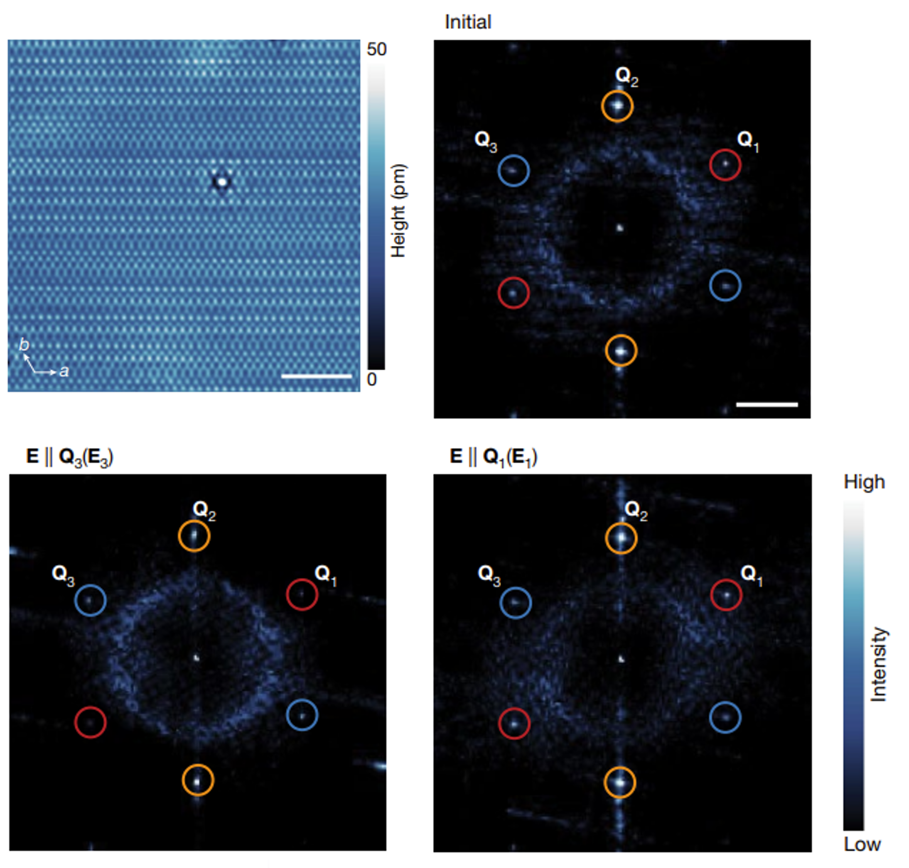
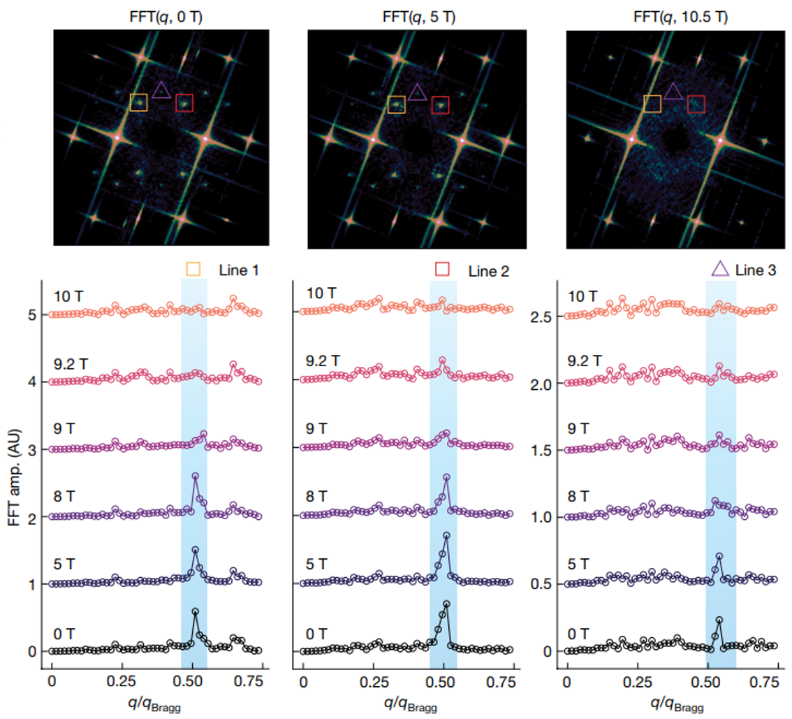
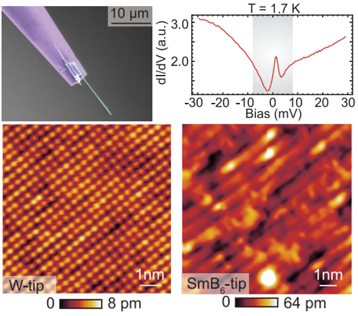

Scanning Tunneling Microscopy & MBE · UIUC Physics
Studying Quantum
Materials, Atom
by Atom
Welcome to the Madhavan Lab. We are a research group at the University of Illinois studying quantum materials. Using state-of-the-art STM and MBE techniques, we generate insights into the most elusive and impactful materials.

Recent Work

Nature 631, 60–66 (2024)
Optical Manipulation of Charge Order in RbV₃Sb₅ Visualized by Laser STM
We have discovered a novel technique to optically manipulate charge order in the kagome superconductor RbV₃Sb₅. Using our unique laser-coupled STM set-up, we apply linearly polarized light along high-symmetry directions and find that the relative intensities of CDW peaks can be reversibly switched. Our laser STM technique opens doors toward dynamical optical control of complex quantum phenomena in quantum materials.
Read Paper →
Nature 618, 918–923 (2023)
Charge-Density-Waves Sensitive to Magnetic Fields in UTe₂
We have found evidence for an unusual charge-density-wave order in the heavy-fermion, spin-triplet superconductor UTe₂. This CDW is incommensurate and weakens in intensity with increasing magnetic field. In collaboration with theorists, we have constructed a Ginzburg-Landau model for a uniform spin-triplet superconductor coexisting with three triplet pair-density-wave states.
Read Paper →
Science 377, 1218–1222 (2022)
Spin-Selective Tunneling from a Nanowire STM Tip
By fabricating nanowire tips with the putative Kondo topological insulator SmB₆, we have been able to observe spin-polarized tunneling with a non-magnetic tip onto the surface of the antiferromagnet FeTe. This novel technique will help pave the way for cutting-edge applications with topological insulators.
Read Paper →Lab News
Best Wishes to Avior!
After four years in the Madhavan Group, Avior Almoalem heads to a position at the The Technion - Israel Institute of Technology. His diligence, wisdom, and camaraderie will be missed by all.
Rachel Defends Thesis!
Rachel Birchmier has successfully defended her thesis, Scanning Tunneling Microscopy of Strain-Engineered and Strongly Correlated Two-Dimensional Materials! We wish Rachel all the best in her future endeavors.
Yun-Tzu Defends Thesis!
Yun-Tzu Hsu has successfully defended her thesis, Scanning Tunneling Microscopy Studies of Strong Correlations in Monolayer Transition Metal Dichalcogenides and Strain-Engineered Graphene! We are very excited to see where Yun-Tzu's career takes her next.
Vidya Elected to National Academy of Sciences
Vidya has been elected a member of the National Academy of Sciences, a prestigious distinction earned for her pioneering contribtions to condensed matter research. Read more at UIUC Physics →
Interested In Our Work?
We are always looking for motivated graduate students and postdoctoral researchers with a passion for condensed matter physics and nanoscale science.
Prospective graduate students should apply through the UIUC Physics graduate program. Postdoctoral applicants should send a CV and brief statement of research interests directly to Prof. Madhavan.
Contact Us